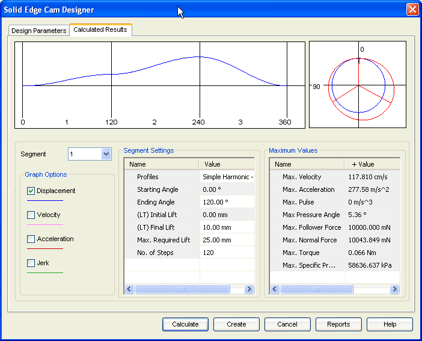

Cam Calculated Results tab
The Calculated Results tab provides the options you use to view results and to control the graphical output. It also provides some options to specify the parameters for each segment of the cam profile. This tab has 5 areas:

- Graphic area 1
-
Displays the displacement, acceleration, velocity, and jerk components along the profile of each segment.
- Graphic area 2
-
Displays the profile for the cam for the inputs provided.
- Graphic Options
-
Use these options to control the visibility of each graph.
- Segment settings
-
Provides input for each segment of the cam.
- Maximum Values
-
Displays the maximum positive and negative values for different attributes of the cam calculated by the program.